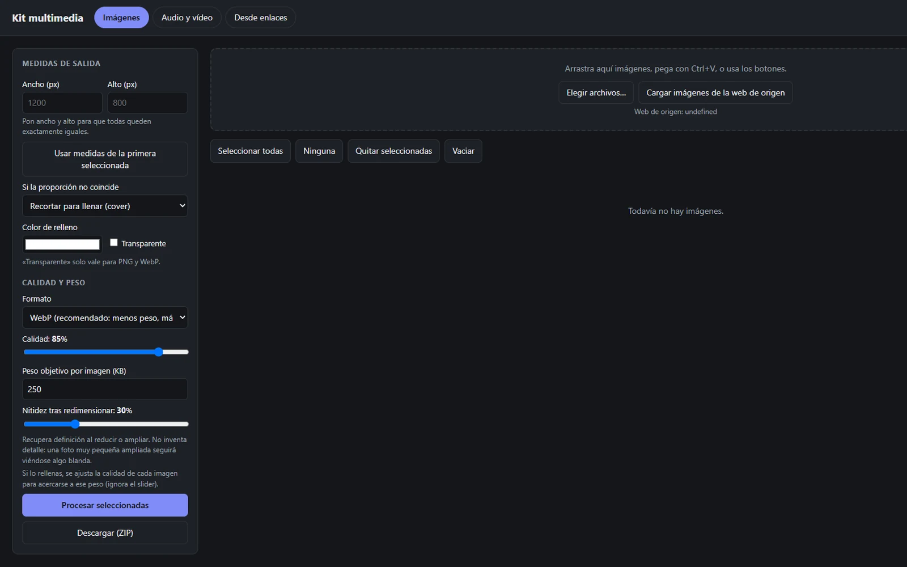

Kit multimedia
Extensión de Chrome que reúne en un solo sitio herramientas para imágenes, audio y vídeo, sin instalar programas aparte.

Finalidad y estado
Qué problema aborda este proyecto y en qué punto de desarrollo se encuentra.
Finalidad
Convertir, comprimir y preparar archivos multimedia de forma rápida desde el navegador.
Estado
Versión 2.0.0 · uso en modo desarrollador
Funcionalidades
Lo que hace la extensión hoy.
Imágenes
Igualar medidas (recortar, encajar o estirar), elegir JPEG, PNG o WebP, ajustar calidad y peso objetivo en KB.
Audio y vídeo
Extraer audio a MP3 o WAV, vídeo a GIF animado, sacar fotogramas y comprimir o recortar vídeo.
Desde enlaces
Descargar archivos por URL directa y extraer su audio en MP3.
Descarga de los resultados en un ZIP.
Captura real
Pantalla de la extensión en funcionamiento.
Capturas pendientes de añadir: el resto de pantallas de la extensión. No se muestran imágenes simuladas.
Tecnologías
Lo que he utilizado para construirla.